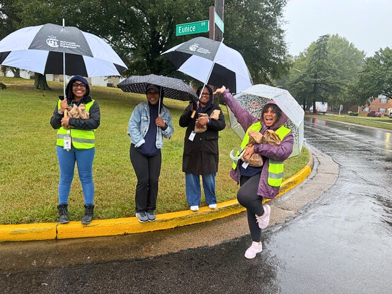
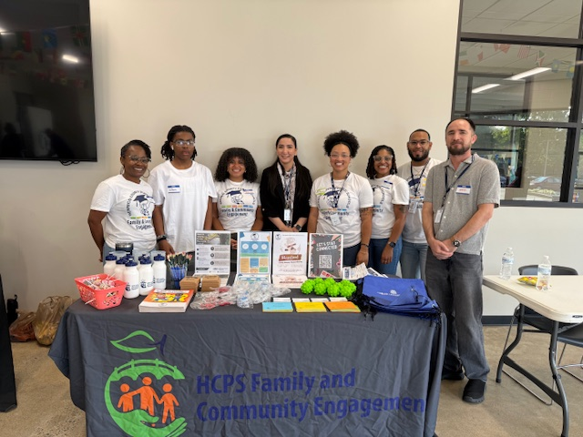
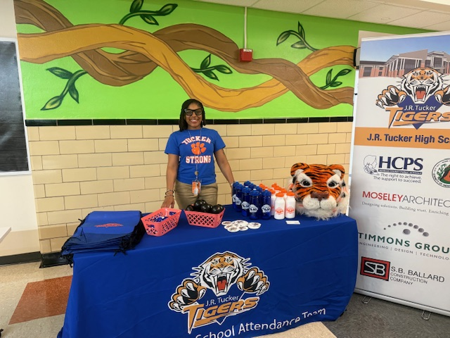
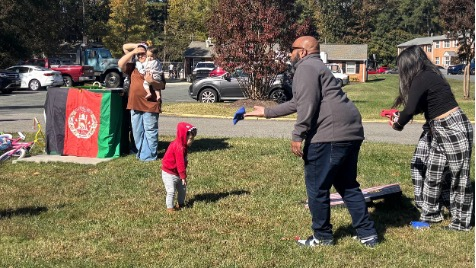
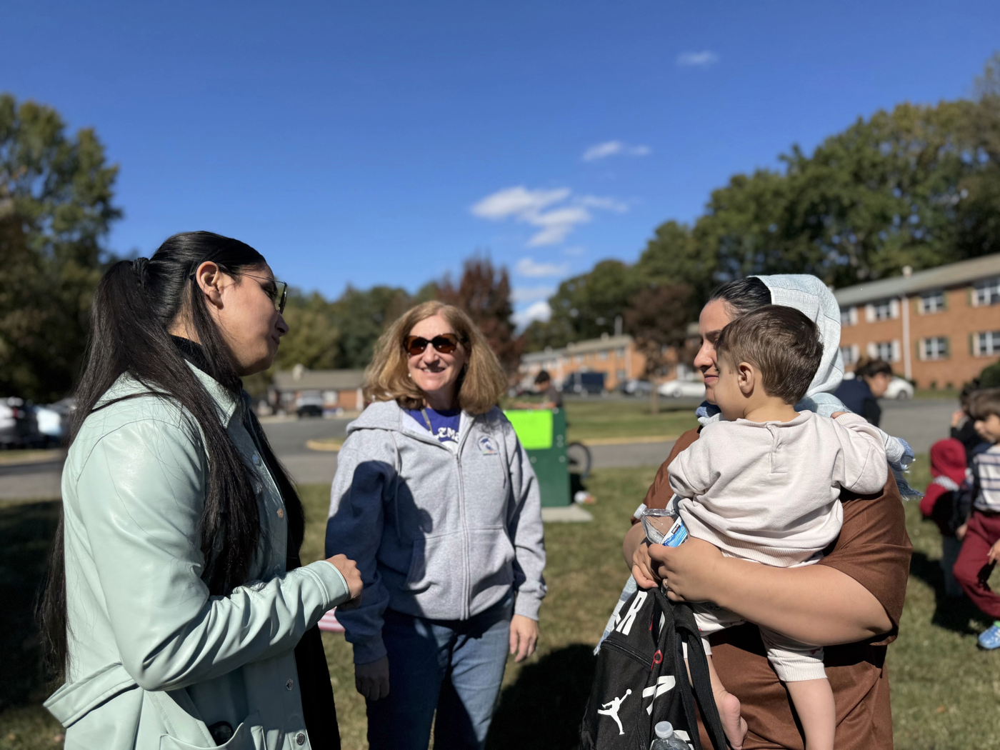

Cohort 1 📍 Region 1
Henrico County focused its community schools work at Tucker High School and Quioccasin Middle School, where improving attendance requires a different approach. Both schools serve immigrant and refugee families who are challenged to navigate a new school system in a language that isn't their first. To support them, the division elevated two family advocates into Community School Resource Coordinator positions and partnered with refugee resettlement agencies, cultural navigators, and translation services so they could connect with families in their own language.
At the middle school, an International Family Advisory Committee meets in Portuguese, and the Afghan Community Picnic connects families to the school through cultural celebration. At the high school, students designed Tiger Cart, their own attendance initiative with student-authored branding and an implementation plan. Henrico's approach is showing results. On-time attendance has increased at both schools, with the strongest gains among the students the program was designed to reach.

Bus stop pop-ups run by both schools brought school staff into neighborhoods this fall where they could greet students before the bus arrived. Staff showed up each day, rain or shine.

Tucker's family and community engagement team partnered with the YMCA at their English Learner Resource Fair. The fair connected immigrant and refugee families to services, and the staff who manage resource coordination and translation services were available in person to walk families through the types of support the division can offer.

Tucker High's School Attendance Team shared information at a faith-based leaders luncheon, displaying school materials alongside their community partners. The event connected the school's attendance work to the faith community. Three faith-community partners serve Tucker High: St. Andrew's United Methodist Church, Faith Landmarks Ministries, and Speaking Spirit Church.
Tiger Cart is a student-designed attendance initiative at Tucker High School. Victoria and Mya, two Tucker students, identified absenteeism as a problem at their school and established the objective of "improving our numbers through healthy rivalry with our peers". The cart offers snacks, fidget toys, and other incentives that students can purchase with points earned through collective class attendance.


The Afghan Community Picnic at Quioccasin Middle brought families together for an outdoor cultural celebration, with children in traditional dress, soccer on the grass, and the Afghan flag displayed alongside shared food. The event is part of the school's Afghan Family Navigator work, connecting families to the school and to each other through cultural celebration.
The International Family Advisory Committee at Quioccasin Middle meets in Portuguese, and the school's translation work extends across every communication so that language is never the barrier between a family and their child's school.
Henrico County Public Schools' Community Schools exemplify VCSI 5.1: Honor the Ideals and Values of the Community School. The Community Schools host events that bring families and the community into the school, such as advisory meetings and cultural celebrations. These events provide opportunities to celebrate shared values and foster connections.